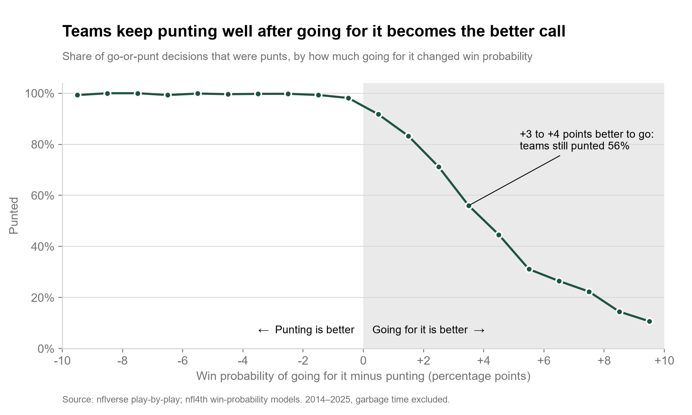
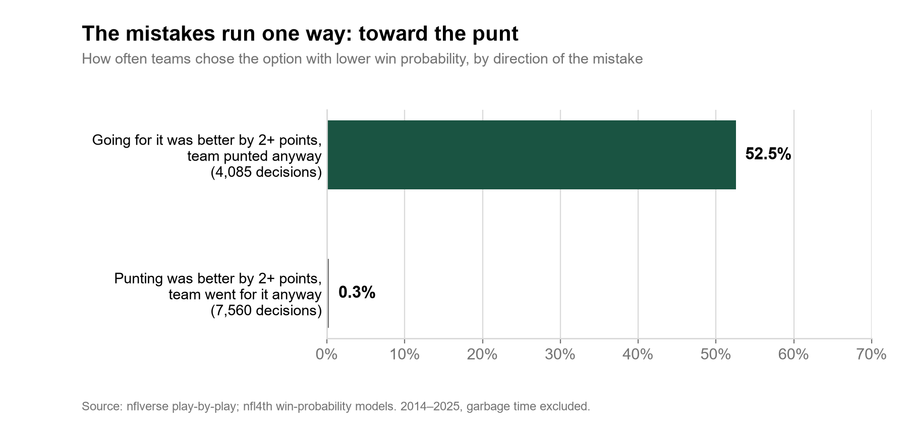
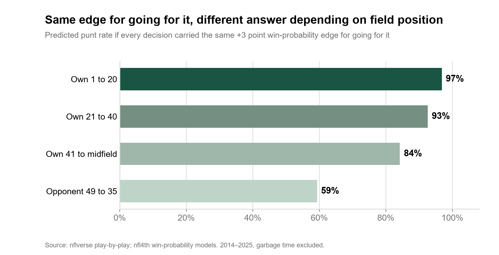
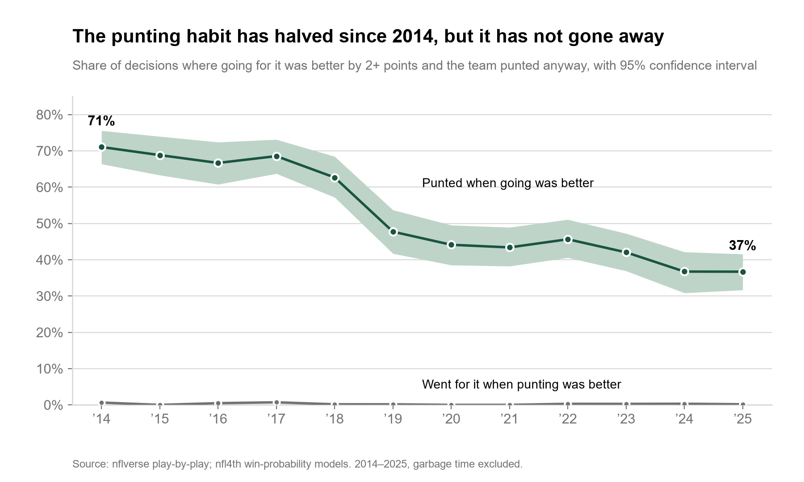

Executive takeaway
When going for it was better by 2 or more points of win probability, teams punted 52.5 percent of the time. When punting was better by the same margin, they went for it 0.3 percent of the time. Random mistakes would run both ways; these run one way, in all 12 seasons.
The habit has halved since 2014 but not closed. On fourth and 1 or 2, from a team's own 21 to the opponent's 35, make going for it the default when the edge is 2+ points. That band holds 53 percent of the win probability given up, and teams still punt there 47 percent of the time.
The question and the hypothesis
On fourth down a team chooses between going for it, punting and kicking a field goal. Public win-probability models put a number on each choice. The question is how often teams punt when the model says going for it is better, and whether that reflects a systematic habit or the ordinary noise any model carries.
I stated the hypothesis before running the analysis:
- H0. After accounting for field position, yards to go, score, time remaining, timeouts and game strength, teams do not systematically punt when going for it offers greater expected win probability.
- H1. Teams systematically punt in some situations where going for it offers greater expected win probability.
Every control named in H0 is an input to the nfl4th models, with game strength entering through the pre-game point spread. Comparing the go and punt win probabilities for the same snap therefore holds them fixed. Rejecting H0 required three independent tests to agree.
| Test | Question | Result |
|---|---|---|
| Asymmetry | Are wrong punts more common than wrong attempts? | 52.5% vs 0.3%; difference 95% CI 50.6 to 53.9 points |
| Structure | With the edge held fixed, does the situation still predict a punt? | Yes. Joint Wald chi-square 1,261 on 15 df, p < 1e-200 |
| Persistence | Does it hold every season? | Significant in 12 of 12 seasons |
Verdict: H0 is rejected.
The data, and what it cannot tell you
Every fourth down from the 2014 to 2025 regular seasons and postseasons, from nflverse play-by-play, joined play by play to the win probabilities published by nfl4th. That is the same file nfl4th's own loader uses, so the probabilities match the package exactly. 47,892 decisions, snapshotted on 4 October 2026 with each source's release timestamp and a file hash recorded.
The headline population is the 25,318 decisions that were a go or a punt, where both options are modelled, outside garbage time.
Three things the data cannot do, stated up front because they bound every conclusion below:
- It cannot see past the model. Every finding is a gap between what teams did and what nfl4th recommends. If the model is wrong in a situation, the gap there is wrong too.
- It cannot see what coaches see. Injuries, matchups, weather beyond the basic fields, and how the next drive is likely to go are not in the data.
- It cannot cover overtime or the opponent's 34 and in. nfl4th does not compute overtime, and it does not model a punt that close to the end zone.
What validation changed
Four things would have made the numbers wrong without anything visibly failing. Checks caught each one.
The package's headline number answers a different question
nfl4th's go_boost compares going for it with the
better of punting and kicking. Validation confirmed it equals that
difference exactly. This project's question is go versus punt, so it computes
its own measure rather than borrowing one that sounds right.
Replayed fourth downs were counted twice
After a delay of game or a false start the down is replayed, and both snaps appear in the data. 2,014 series contain a replayed fourth down. Only the last snap counts as the decision.
The obvious coding rule dropped real punts
Coding a punt from the “Punt formation” text missed 195 punts and field goals with an accepted post-snap penalty, whose description reads “punts 46 yards … PENALTY”. I found them by reading the excluded rows rather than accepting the count. The final coding agrees with an independent field in the data on 98.7 percent of punts; the rest are return touchdowns, blocks and penalties, which were still punt decisions.
The result that changed when the rows were shuffled. The structure test fits a flexible curve to the win-probability edge. As first written, that curve was redundant with the model's intercept. The model still converged to the same fit, so nothing errored, but its test statistic moved between 809 and 980 depending on row order. The curve is now constrained, the code checks the model is fully identified, and two consecutive runs produce identical output.
Findings
1. Teams keep punting after going for it becomes the better call

2. The mistakes run one way

3. Field position drives the punt, not the win probability

4. The habit has halved, and it has not gone away

5. The cost is concentrated in a few situations
![Six horizontal bars ranking situations by expected wins forfeited through punting when going for it was better by 2 or more points. Fourth and 1 between a team's own 21 and 40 is highlighted and largest, at 16.1 expected wins from 485 punts, more than twice the next situation. Fourth and 1 from own 41 to 50: 7.5 wins. Fourth and 4 to 5 from opponent 49 to 35: 6.0 wins. Fourth and 6 to 9 from opponent 49 to 35: 5.5 wins. Fourth and 2 from own 21 to 40: 5.1 wins. Fourth and 2 from own 41 to 50: 3.9 wins. League-wide total at this margin: 72 expected wins.](assets/charts/nfl/05-costliest-situations.png)
What I ruled out
Ranking teams
For 2023 to 2025, team punt rates in clearly-go situations range from 23 to 64 percent. That looks like a league table. At 22 to 45 relevant decisions per team, a significance test says the spread is consistent with chance (chi-square p = 0.061). Naming the most conservative club would reward luck, so no team is named. The pattern is league-wide.
Counting every edge as a mistake
At a zero margin, a third of all punts would count as wrong. Below about 2 points the gap between options sits inside plausible model error, and headlining it would overstate the problem and invite overcorrection. Results are reported at margins of 0, 1, 2 and 4 points; the headline uses 2.
Garbage time driving the result
Decisions where either option's win probability is below 5 or above 95 percent are excluded from the headline. Putting them back lowers the headline share from 9.5 to 7.9 percent. Restricting to the regular season, to the first half, or comparing going for it with the better of punting and kicking moves it between 7.4 and 9.5 percent. No variant changes the direction.
Recommendation and trade-offs
Go for it by default on fourth and 1 or 2, own 21 to opponent 35
When the model's edge is 2 or more points, going for it is the default and a punt needs a stated reason: an injury at a key position, a specific matchup, weather. Before each game the analytics staff prepares the recommendations for this band given the spread and expected conditions. Logging the reasons for each override builds the evidence for the next season.
Why a default: on the sideline, a punt is the choice that never needs defending. A default changes which choice has to be justified, which is exactly where the habit lives.
Trade-off, stated plainly: teams that did go for it on fourth and 1 between their own 21 and midfield converted 71.5 percent of 822 attempts. That rate comes from attempts teams chose to make, so it is optimistic for the ones they declined. The 2-point threshold is the margin of safety for that.
Review the opponent 49 to 35 at 4 to 9 yards separately
The second concentration, at 11.5 expected wins. It is outside reliable field goal range, and a punt from there gains little field position. The conversion odds are lower than in short yardage, so it needs its own review rather than the same default.
How to tell whether it worked
Primary measure: among the club's own decisions where going for it was better by 2 or more points, the share that were punts. The league figure in 2025 was 37 percent.
Why not wins: the effect is about 0.19 expected wins a season. A 17-game record cannot detect that, and judging the policy by it would credit or blame it for noise. Measure the decision, which the club controls.
Check the model, not just the coaches: record every attempt in the band and compare actual conversions with the model's predicted first-down probability for the same snaps. If teams convert less often than predicted, the threshold should rise. That is also how to settle the main limitation below.
Limitations
- Every finding is relative to nfl4th's models.
- The asymmetry has two readings. Coaches may be too conservative, or they may correctly believe the conversion model is too optimistic for the attempts they decline, because it is trained on the attempts teams chose to make. The data cannot separate the two. That the gap persists at a 4-point margin makes pure model error less likely.
- Win probability is not the only objective. Job security and the uneven blame for a failed attempt compared with a punt are real incentives. This measures the gap, not the motive.
- Overtime and the opponent's 34 and in are excluded.
- Observational data, no causal claims. It shows what teams did against what the model recommended, not what would have happened otherwise.
How it was built
Python and DuckDB, with statsmodels for the regression. No R install was needed: nfl4th's published probability file is read directly in Python. The whole pipeline reruns from one command: acquire, validate, model, analyse, chart.
- Immutable snapshot. Each pull writes a manifest with the source, the release's last-updated time, row counts and a SHA-256 hash.
- Eighteen validation checks on grain, join coverage, decision coding and probability ranges, each logged with its SQL and output.
- Definitions in one file. The decision coding, the measure, the margin and the situation bands live in a single module that the model and the analysis both import.
- A tested analysis table. Eight tests run on every build, including one decision per series and a reconciliation back to the validation count. Excluded decisions are flagged with a reason, not silently filtered.
- Uncertainty that respects the data. Game-clustered bootstrap confidence intervals, 2,000 resamples with a fixed seed, and game-clustered standard errors in the regression.
Code, decision memo, validation log and analysis tables on GitHub